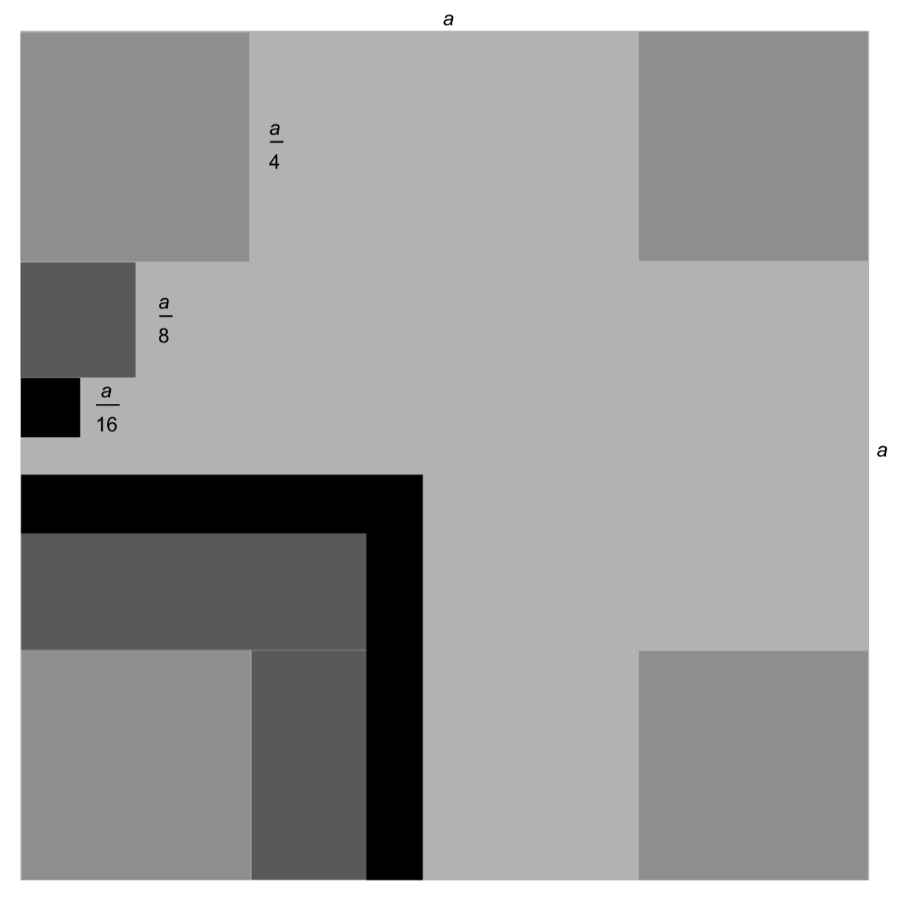

At odds with ad infinitum
24th December 2018
Directory:
1. Introduction
The aim of this post is not to understand infinity - rather, it is to demonstrate the oddities and pure weirdness that arises from this concept. The Latin term ad infinitum translates to to infinity, which is commonly used in mathematics when describing sequences, summations, etc... that tend to infinity. We demonstrate the concept with a simple example, which almost everyone has probably encountered at some point during their formal education.
To say that a number sequence is recurring is to say that it repeats indefinitely - ad infinitum. So, what is zero point nine recurring - $0.\bar{9}$? At any given decimal place, the integer 9 is to be found. We can express this formally as a summation, $$0.\bar{9} = 0.9 + 0.09 + 0.009 + ... = \sum\limits_{i=1}^{\infty} \dfrac{9}{10^i}$$
It can be challenging at first to see that this in-fact is simply the integer 1 in disguise. When one first encounters this statement, the first thought is typically how can this be, imagining that they can take the difference between 1 and a very large but finite number of decimal places with the integer 9. This - in a sense - is correct: One can take more decimal places then there are particles in the Universe, as long as the number of decimal places taken is finite, then the result would not be 1.
However, truly, this notion is incorrect. There is the underlying assumption of the finite condition, when in fact we are saying that 9 must repeat indefinitely. This, on a side note, demonstrates the importance of logic in mathematics. Providing a proof that $0.\bar{9} = 1$ is a simple exercise in algebra: $$\begin{align*} x &= 0.\bar{9}\\ 10x &= 9.\bar{9} = 9 + 0.\bar{9} = 9 + x\\ 9x &= 9\\ x &= 1 \hspace{5mm} \square \end{align*}$$
The above proof makes a seemingly bewildering concept seem trivial, through the use of symbolic notation (a process of high level abstraction). So, does one now understand what happens ad infinitum? Foolish is one who thinks so - we are always at odds with the concept of ad infinitum!
2. Not One-of-a-Kind
We call the set of positive integers, starting from 1, then 2, 3, etc... as the set of natural numbers. Abstractly, a set is a collection of objects without repetitions and in which ordering is not important. We refer to the size of a set as its cardinality. For any natural number that one can think of, the integer 1 can always be summed to it, defining a new and larger natural number. For this concept, in everyday language we typically say that there is an infinite number of natural numbers.
More formally however, we say that there is a countably-infinite number of natural numbers. We thus say that the cardinality of the natural numbers is countably infinite. The reason being that, we can always start from 1 and start counting our way up - granted, one will never stop counting - but nonetheless, one is still counting. Counting ad infinitum!
Consider the odd and even numbers. If $n$ is a natural number, an odd number can be generated by writing $2n - 1$ and an even number can be generated by writing $2n$. These are informal examples of functions, mapping between the naturals and the odd/even numbers. We note that, the natural numbers in fact consist alternating odd and even numbers. Thus, at first, one may think that the cardinality of the set of odd numbers is half the cardinality of the set of natural numbers in its entirety. Similarly for the set of even numbers. However, it is easy to show that in fact the cardinality of the set of odds and the set of evens is countably infinite for both, the same as the cardinality of the set of naturals.
Consider for example the function that generates the odd numbers: for every unique natural number one inputs, a unique odd number is generated. There is a one-to-one correspondence between the odds and the naturals, counting the odds is equivalent to counting the naturals. The table below illustrates this process, $$\begin{array}{c|c} \text{Naturals} & \text{Generated Odds} \\ \hline \hline 1 & 1\\ 2 & 3\\ 3 & 5\\ \vdots & \vdots\\ n & 2n - 1\\ \vdots & \vdots \end{array}$$
A similar correspondence exists for the even numbers, through the one-to-one association of the function that generates the evens with the natural numbers. The result is, to say the least, counter-intuitive. This is the first true example of the weirdness that can occur ad infinitum.
We can think of a different kind of infinity - uncountably infinite. Take for example all the numbers between 0 and 1 - how many are there? Can one count them? The answer is no - not only is there an infinite number, but a countably infinite number. To demonstrate this, we shall use an ingenious argument known as Cantor's Diagonal Argument. Suppose that there is an association between the natural numbers and the numbers between 0 and 1, in a unique manner. In other words, suppose that there are countably infinite numbers between 0 and 1. We shall symbolically denote this association by $f$, short for function. For a given natural number $n$, $f(n)$ uniquely gives a number between 0 and 1.
Consider the decimal expansion of $f(n)$, $$f(n) = 0.a_{n_1} a_{n_2} a_{n_3} ... a_{n_k}...$$ where the terms in $a$ are simply integers between 0 and 9.
Now consider : $$\begin{array}{ccccccc} f(1) = & 0. & \mathbf{a_{1_1}} & a_{1_2} & a_{1_3} & a_{1_4} & ... \\ f(2) = & 0. & a_{2_1} & \mathbf{a_{2_2}} & a_{2_3} & a_{2_4} & ... \\ f(3) = & 0. & a_{3_1} & a_{3_2} & \mathbf{a_{3_3}} & a_{3_4} & ... \\ f(4) = & 0. & a_{4_1} & a_{4_2} & a_{4_3} & \mathbf{a_{4_4}} & ... \\ \vdots & 0. & \vdots & \vdots & \vdots & \vdots \\ \end{array}$$
We now construct a number $y$ between 0 and 1, such that $y = 0.y_{1}y_{2}y_{3}y_{4}...$ is defined as : $$y_{n} = \begin{cases} 1,& \text{if } a_{n_n} = 0\\ 0,& \text{if } a_{n_n} \neq 0 \end{cases}$$
By construction, $y$ differs with respect to $f(1)$ in the first position, differs with respect to $f(2)$ in the second position, differs with respect to $f(n)$ in the $n$th position, etc...
Thus for any natural number $n$, $f(n)$ is not $y$ and thus $y$ is never counted by $f$. This is a contradiction - thus an association $f$ which counts the numbers between 0 and 1 cannot exist. Therefore, the cardinality of the set of number between 0 and 1 is uncountably infinite.
3. Tiling a Square with Squares
Suppose that one is given a square of arbitrary side length $a$. We begin tiling this square iteratively in the following manner: During the first iteration, at each corner, place a square of length $\dfrac{a}{4}$. For the second iteration, 5 squares of length $\dfrac{a}{8}$ are tiled around each corner, i.e. a total of 20 smaller squares, and so on... this is illustrated in the diagram below. Is it possible to cover the square entirely in such a manner?
The interested may try to show that the area $A_n$ covered by these tiles at the $n$th iteration is given by, $$A_n = a^2 \sum\limits_{i=1}^n \dfrac{2^{i+3}-12}{4^{i+1}}$$
The expression above is simply included for completeness sake - anyone with access to Wolfram's Mathematica software is encouraged to play around a bit with this expression and evaluate it for different values of $n$. The table below gives some sample outputs, $$\begin{array}{c|l} n & A_n \\ \hline \hline 1 & 0.25a^2\\ 2 & 0.5625a^2\\ 10 & 0.998048a^2 \end{array}$$
It becomes immediately apparent that even for small values of $n$, the tiling practically covers the entire area of the square. However, for any finite number of iterations $n$, $A_n < a^2$ still. One can imagine that an incredibly thin cross remains untiled about the centre of the square. Yet, if one carries on tiling indefinitely, as $n\to\infty$, $A_n = a^2$.
This is yet another seemingly counter-intuitive result: it is only if one tiles indefinitely that one can cover the entire surface area of the square, otherwise some area (even if infinitesimally small) remains untiled.
1. Ambiguity in Natural Languages
When one looks at the development of natural languages, it becomes immediately apparent that their development has taken an unstructured path, changing and developing with the times. As a consequence, situations of ambiguity may arise. Such ambiguity may, for example, contribute to the beauty of a piece of prose or poetry. However in Mathematics, this can lead to confusion and inharmonious theories. A simple example of ambiguity that may arise in day-to-day speech is the following: "This old dog still has what it takes to learn new tricks!"
Someone more inclined towards the use of idioms in the English language, may interpret the previous as referring to someone of old age, still with the capacity to learn something new. Someone more inclined towards literal meaning however may interpret the previous as referring to an old dog, learning new dog tricks. No more, no less.
Logic provides a useful set of tools to aid in checking and resolving many instances of ambiguity, while also looking at compound statements without a broader scope. In other words, context is only dependent on what is already known, and free of any externalities. It is for these reasons then that logic serves as an integral part to the language of Mathematics. This use case is not exclusive to Mathematics however: Logic in all its forms is nowadays used heavily in Computer Science, and has been fundamental to the development of Philosophy since the times of Aristotle.
2. Propositions and Statements: Introduction to Symbolic Representations
Logic often involves the simplification of worded statements and arguments into symbolic form. In order to understand this concept better, one must first define the elementary proposition. Such a proposition defines a singular fact, and its structure can be broken down into three components:
Thus an example elementary proposition would be: The violoncello is in tune. Note that the Copula can be affirmative or negative. The previous example makes use of a Copula in the affirmative sense. However, the violoncello is not in tune, makes use of the Copula is not, which is in the negative sense. The collection of elementary propositions together brings about the formulation of a complex proposition.
In a statement, elementary propositions are considered as variables. We denote variables symbolically by using letters. Example, the violoncello is in tune can be denoted in a statement by the letter $a$. However, it can can also be represented by any other letter, just as long as each elementary proposition in a statement has it’s own unique letter assigned to it, and not multiple, different, elementary propositions assigned the same letter. Before one translates a statement into symbolic form, it is important that one lists what each of the variables used means.
For example, either the sky is falling or I am out of my mind, consists of two elementary propositions. Let $a$ be the sky is falling and let $b$ be I am out of my mind. Symbolically, we have: either $a$ or $b$.
Notice then that, this provides a means of representing the logic behind a statement, independent from the actual context in which is resides. If one is simply told that either $a$ or $b$, one does not know if $a$ is talking about how Dmitry has eccentric tendencies, or how Martha has a glistening smile. Similarly for $b$.
In the next installment, an overview of logical operators shall be given, completing our study of symbolic representations. Logical operators provide are what link elemntary propositions, and are the crux to solving ambiguity using a logical system. So for example, either...or... corresponds to some particular logical operator, to be discussed in another article.
3. A Brief Introduction To Truth Tables
A variable (with reference to an elementary proposition) may be in one of either two states: True, or False. As discussed, a statement typically has multiple elementary propositions, and thus one ends up with multiple variables. Since each variable has $2$ possible states, if a statement consists of $n$ variables, then the number of state-combinations possible between these variables if $2^n$, i.e. $2$ multiplied with itself for $n$ times. A simple combinatorial result!
Since elementary propositions in a statement are related (or better, operated on) by logical operators, the output of these operators, for a particular combination of states, give a True or False value to the entire statement. In other words, one would be able to deduce if a statement is in fact True or False, independent of external context. This last point is important - some statements deemed True by logic, may be utter nonsense in the 'real' world. In this manner, this 'real' world is no more than uneccassary context.
Truth tables provide a simple means of listing all possible combinations, and the resulting corresponding state of the statement. For some statment represented using two variables, the number of combinations is four. These are listed below, along with an example worked out statement in the rightmost column. $$\begin{array}{cc||c} \mathbf{a} & \mathbf{b} & \mathbf{a} \ \text{and} \ \mathbf{b}\\ \hline \hline \text{True} & \text{True} & \text{True} \\ \text{True} & \text{False} & \text{False} \\ \text{False} & \text{False} & \text{False}\\ \text{False} & \text{False} & \text{False} \end{array}$$
The truth table above describes how a logical operator representing the keyword and in natural languages, operates between two variables to give an output. Look at the truth table, along taking note of the values of the variables and the corresponding output. Notice how the statement is true only when the all variables are true.
Professor Stanley Fiorini is often regarded as the father of graph theory in Malta and is a well-respected historian. The Second Malta Conference in Graph Theory and Combinatorics, of 2016, was held in celebration of his 75th birthday and his career as a mathematician. Xandru Mifsud sat down with Professor Fiorini for a two-part interview, to discuss his early encounters with mathematics, introducing graph theory in Malta, and his work as a historian. The author would like to express his gratitude towards Stanley for his thoughtful answers!
X: Firstly, perhaps you would like to introduce yourself to our readers?
S: Well, I'm Stanley Fiorini, 78 years old next birthday, in November. I've lived a happy life and I've always done things that I enjoy doing. I've never done something unless my heart wasn't in it fully, so I tended to move from one area to another, depending on the circumstances. I don't know what else, ask me!
X: If I had to meet a young Stanley in class, would I have been immediately able to say that he's going to be a mathematician, or maybe even a historian?
S: Well, I've always had an orderly life, and that's very conducive to logical thinking. All my copybooks at school were very neat. I was very proud of presenting very neat work, underlining answers in red and that kind of thing.
I also loved problem-solving from very early on, doing puzzles, which I still enjoy doing, and also on reflection before this interview, creating puzzles. That was kind of an embryonic element of the tendency to do research, which is creative work. So if you were very perceptive, then you might put all this together and say, yes, he could be a mathematician.
I also loved music. I was born in a very musical environment, with my elder sister’s piano always in the background. My father, too, was always playing his gramophone records. These two things I think do go together, mathematics and music. The music I love best is Johann Sebastian Bach, who is very orderly and mathematical. I got to love him with a passion, especially when later on I took up playing the violin.
So perhaps yes, from early on the indications were there. I also did well at school, since I always had the benefit of very good teachers in mathematics, both in primary and in secondary school. I only failed once, and I do attribute that to bad teaching! But I will not repeat in what year or in what circumstances.
The Mathematician
X: You mentioned that you had teachers that promoted mathematics. Do you consider that maybe during your education there was that one particular teacher that gave you an extra push or maybe there was that one formative moment?
S: Well, in Form 5 Mr. Frisk used to inspire me with his originality in dealing with mathematical problems. Afterwards, for my A-Levels, I was taken under the wing of Edwin Borg Costanzi, who had recently returned from Oxford. It started with going to his evening classes in Valletta, in the Evans Labs, there was in that class Joe Formosa who was a technician in the University physics lab in those days. Then afterwards I used to go to private tuition under Edwin, who kept on urging me to go to Oxford where he himself had studied. This I did at great sacrifice because financially I wasn't prepared for it.
Edwin also introduced me to his former tutor, Jack De Wet, from South Africa. For my first year, Jack was my tutor at Balliol. In Oxford I had excellent tuition; foremost in my mind is Keith Hannabuss, also of Balliol, to whom I subsequently arranged for Joseph Muscat to go and work with; Joseph did extremely well at Oxford.
Perhaps I should say something about Oxford, and how the system worked. Oxford is an excellent university, with a beautiful mathematical institute, in the sense that there you came across all the ‘beautiful minds’ you wanted to meet. In combinatorics, Dominic Welsh is foremost. Among students in my year, there were Peter Cameron and Paul Seymour, both of them bright luminaries in the combinatorial world, even now in the States, where they settled.
The terms were short - eight weeks of term, six weeks of vac, which was no vacation at all, as in those six weeks you had to absorb what had gone right over your head during the preceding eight weeks. So we hardly had any holidays during the year. Then we had very long summer holidays, during which I used to come down to Malta, and work and work. But as I said, financially it was very difficult. The only accommodation I could afford was a tiny cubicle, perhaps eight feet by four, in which the bed had to be folded up during the day to make room for a tiny makeshift desk.
The space was so restricted that you froze if you did not put on your heater, and if you did put your heater on, then you were scorched! So I spent my days in the Radcliffe Science Library, from morning till night, except for meals. We had one exam, called moderations, at the end of the first year, with three papers on algebra, analysis and methods. Then the final examination after three years, in which you faced 27 hours of examination in five days. Three hours in the morning, three hours in the evening, Monday to Friday lunchtime. No kids’ gloves treatment; nothing like what Maltese students are regaled with today and no one ever questioned the system. This meant that you had to be prepared to your teeth, and have all the stuff at your fingertips; no exam-free couple of days before each test to allow for last- hour cramming and then forgetting all about it.
You had the first six papers of standard stuff: algebra, analysis, etc, and then you had three papers on what we could call electives, a choice of a couple of topics from a wide variety of options available. I opted for functional analysis and combinatorics; this is where I came across a certain Robin Wilson, who tutored me and introduced me to graph theory. And that was my initiation into the subject. I immediately took to it because it's very attractive, in the sense that you have very difficult problems which are immediately accessible, to mention, for example, the Four Colour Problem. Robin stimulated me highly exposing me to such problems like the Zarankiewicz Problem, the Reconstruction Problem, and, of course, colourings in general and edge-colourings in particular.
When I returned to Malta and started teaching at Junior College, I had kept mulling over these new concepts, working at them, and also trying my hand at creating solutions, rather than regurgitating other people’s stuff. I also started using the computer to obtain certain solutions; at the time handling computers was very different from what we are used to these days. The machine in the computer lab at Oxford occupied a whole house. To write a programme you had to write a card for every single statement in it, ending up with a pack of cards several centimetres high; this you then fed into this machine, out of which came your solution. I'm very thankful to Carmel Galea (of Megabyte), who was more adept at computing than I was, for helping me out with my programming at the time. We were then both teaching at Junior College. There was also Irene Sciriha teaching there, she was doing applied mathematics. I enjoyed that year - I still remember students, some of whom still come up to me and remind me of those happy days when I introduced them to a different way of teaching- what I had learnt at Oxford, of course.
X: How then did your PhD come about?
S: It was Edwin again who came to my rescue, bringing to my notice a conference that was to take place at St. Andrews University, Scotland, and offering me financial support to attend – how lovely! By that time I had met Joan, my future wife, whom I informed that I was going to St. Andrews for the ten-day conference. This was a workshop with three areas of instruction, one of which was given by Frank Harary, who had striven hard to promote graph theory. Another was on optimisation, given by Vargas, and the third on algebra, given by Cohn.
That was very enjoyable, both contentwise and for the opportunity it provided to renew old friendships. For example, at this conference among others there was Hilton from Reading. At the time I was working on a graph theory problem to which I was trying to apply some complex analytic methods. In Oxford, at the time there was Dr. Hilary Priestly of St. Margaret's, who had lectured me on the subject, and I thought that before going down to London’s Heathrow, I could pop in at Oxford and have a chat with her about this. I went to Oxford and I couldn't find her as it was summer vac, but I did meet Robin Wilson again, whose very first words were, 'Ah! You're the one I want to talk to'.
In the meantime, he had moved from Oxford to the Open University where, at the time, he was rooting around for his first potential PhD students. It so happened that his first candidate, for some reason, had been unable to accept the offer, and Robin was now looking for a replacement. He told me that he had the money for a PhD studentship, asking me if I'd be willing to accept and to start in October. That was in August, my future wife didn't like it at all, but agreed for me to go back in October. I started working on edge-colourings, which is what Robin wanted to do. He had just produced a little paper with Beineke, which became my spring-board.
Thank God, my former financial headache was now over, because now I had the scholarship. At this stage I must show my gratitude to my family that supported me as best they could throughout my difficult undergraduate days. I had then approached the financial aspect of my study very näively. I knew that at the time tuition was once a week, and it cost two quid for an hour's tuition. So I said to my self, “Fine: eight weeks of term, eight tutorials at 2 quid, eight times two is sixteen, I need some money for food, and some money for accommodation.” I think that in the end I was packed off with about 500 quid at the time, and that was just not on. Another 500 I had to borrow from a kind person, and my family supplemented as best they could, for which I am eternally grateful.
So I went back to the Open University and started working. The intention was that Joan and I would get married within a year’s time, in January next. I came down to Malta in Christmas when we got officially engaged, waiting for another year to get married.
I must mention something you'd appreciate. I was living in digs at the moment, and I was having my meals at Greyfriars College – the college of my undergraduate days, which no longer exists. Coming back to my digs one evening, I suddenly spotted a logical flaw in a fundamental statement I had made, and on which I had built a couple of months’ work. I had a terrible experience of a nervous attack - my tongue became heavy, my hands were heavy. I just had to lie down on my bed and weather it out. An experience like this at the beginning of your research career could be very disheartening, but somehow, although I couldn't amend the flaw, there were other areas I could attend to and in the end it worked out well. In fact within two years I had completed my thesis “On the Chromatic Index of Simple Graphs”. During my third and final year I was kind of doing a postdoc and also helping Wilson with teaching at Balliol, a part-time post which he had retained, and that brought me into contact with some very good graph theory students from the college. It was a time to start accumulating a of problems and topics of interest.
X: I have heard on multiple occasions that you are considered as the father of Graph Theory in Malta. What was it like introducing this new area at the university?
S: I came back to Malta in 1975, by which time we had had our baby girl, Christina - luckily she came after I had completed my thesis, as otherwise it would have been impossible working with all the din that babies produce in their first months - I had a stock of problems to work on, and also to introduce to students in Malta.
You bombastically said that I'm the father of Graph Theory in Malta - well, let's not exaggerate too much. Graph Theory had not been taught here before and so it did begin with me, and that’s all that needs to be said. At the time there was Josef Lauri, who was doing a Masters, when our department had introduced the subject at Masters level. The number of staff members of the Maths Department was very small in those years. There were many foreign lecturers at RUM then - Edward Borg Costanzi was still firmly seated in the Rector’s chair, and he preferred to work with foreigners. As for Maltese in Maths, there was me, Joe Pulè, and Albert Leone Ganado. Albert eventually moved to computing. That was all in 1975. Again, Edwin had an excellent idea on how academics could carry on with their research, despite our rather heavy teaching load. In 1976, he gave me a chance to go back to Oxford for six months, which he paid for, allowing me to concentrate on my research from Easter till October, provided I crammed all my teaching duties in the first couple of semesters. But during those six months, I could worked solidlywithout distractions. That's where I got my ideas on working with reconstruction [1, 2, 3]. I produced about four papers within those six months. Some of them jointly, one with Manvel, and I also typed out my thesis, which I published with Wilson - Edge Colourings of Graphs [4].
X: It almost feels like all of this was accidental...
S: Yes, I would call it force of circumstance. I always led myself by the principle – accept life as it comes, always take what you have, make the best of that, and something good will come out of it. Don't waste time - time management is most important for me. So as soon as we finish this interview, I'll be going back to my history, interspersed with some shopping which the wife has to do!
As I was saying, in those six months, I produced the gist of nine papers, and typed out my book. Then in 1977, dark clouds started looming on the horizon for the university, because there were problems with the doctors. I had to get involved with union work, from the university point of view, as I was secretary of the union for university staff, and when things got rough we dissolved our house union and joined the Malta Union of Teachers, as we needed strength in numbers. And things started becoming impossible to concentrate and do any research in that ruckus. Funds for the library dwindled, you couldn't find books, there was no way to go to conferences. The university was shrinking, many people were leaving, many good people, including and especially the doctors started leaving. By 1979 I couldn't take it anymore. Joe Pulè had gone to Ireland, where he still is, and again Edwin gave me the advice not to burn my boat as yet. I was going to sell my house, as I had a buyer, a good buyer. I still had contacts with the Open University, so I arranged for someone there to come to Malta, on an exchange basis. He, for his own personal reasons, needed to be away from there and so he came here to teach, and I went there to replace him.
His job was that of ‘staff tutor’ at the Bristol office, which means that he was organising the teaching of mathematics in the whole of the southwest of England, from Cheltenham in the north to the Scilly Isles in the south. I went to Bristol, and I had to travel to these various places where tuition was going on, and organise the teaching of mathematics. So, administratively it was a very rewarding job. Also, I had started tutoring Lauri for his PhD on graph reconstruction, and I said, “Why don't you come over to the Open University and finish your PhD here?”. I arranged for his financial support, he came over, and for some time he lived with us until he got his own accommodation. It was working beautifully as we were coming up with important results, which you can see in publications [5, 6, 7]; and he finished his PhD there. That was for two years - he had already done one year in Malta before, then did two other years at the O.U., finishing in good time. Then I came back to Malta in 1982. Why did I come back to Malta? I could have stayed there, the Open University had offered me a very good job, so I could have taken that. But, I realised while in England - well, I must say that I liked England, it's my second home, I had spent 12 years there, so from that point of view I was happy - but I realised that I was exiling myself from something very dear to me: my attachment to my roots. And I suddenly wanted badly to rationalise this irrational attachment. So I said, I'll go back come what may. And it was really come what may, for soon again I was out on strike under orders of the union for the Imnarja occasion.
The second part of this interview, on Prof. Fiorini’s research in history, will be published in the coming weeks.
Further Reading
[1] A theorem on planar graphs with an application to the reconstruction problem: I, QJM Oxford (2), 29 (1978) 353-361. [MR 82d#05083a, ZFM 392 / 05023].
[2] A theorem on planar graphs with an application to the reconstruction problem: II, Journal of of 5 5 Combinatorics, Information and Systems Sciences, 3 (1978) 103-119; (with B. Manvel). [MR 82d#05083a].
[3] On the edge-reconstruction of planar graphs, MPPS Cambridge, 83 (1978) 31-35. [MR 58#5313, ZFM 382 / 05044].
[4] Edge-colourings of Graphs, Research Notes in Mathematics, No. 16, Pitman, London (1977) (with R.J. Wilson). [Mathematical Reviews (=MR)58#27599].
[5] The reconstruction of maximal planar graphs, I: Recognition, JCT(B), 30 (1981) 188-195; (with J. Lauri). [MR 82i#05055a].
[6] Edge-reconstruction of 4-connected planar graphs, JGT, 6 (1982) 33-42; (with J. Lauri). [MR 83g#05054].
[7] On the edge-reconstruction of graphs which triangulate surfaces, QJM Oxford (2), 33 (1982) 191-214; (with J. Lauri). [MR 83h#05065].